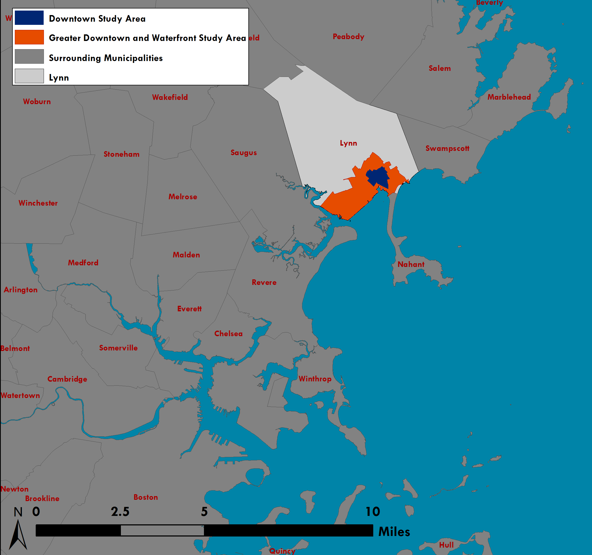

|  Map showing Downtown Lynn in its regional context. |
Brothers' Deli at 41 Market Street features a painting of Market Street in 1890. |
This map shows the geographic focus of this project as compared with the study areas for previous plans. |
 This is a cropped image of Lynn's zoning map as of 2010, along with the boundary of the MAPC study area shown in black. |
Project Location & Regional Context
The City of Lynn is a regional urban center home to about 90,000 residents at the gateway between the North Shore and the urban core of Greater Boston. It is the largest city on the Massachusetts North Shore, the 4th largest city in the MAPC region (after Boston, Cambridge, and Quincy), the 9th largest in Massachusetts and the 16th largest in New England.
Downtown Lynn is conveniently located along the MBTA Newburyport/Rockport Commuter Rail Line, well-served by MBTA buses, and is in close proximity to Routes 1A, 129, and 107. Downtown Lynn is nine miles from Logan International Airport and is about 5 miles from Wonderland MBTA Station which connects to Blue Line subway service. In the near future, Lynn is expected to be served by a commuter ferry as well.
Lynn is variously characterized as a regional urban center, a gateway city, and a smaller industrial city. These cities often have in common a strong industrial past – they were thriving in the late 19th or early 20th century – which was followed by a decline in the mid-late 20th century as a result of changing economic structures and housing preferences. They are also often seen as places that have always been host to larger immigrant populations, thanks in part to more affordable housing and commercial real estate options. Today, these communities face challenges but also many opportunities to become models for creative and inclusive revitalization.
Typical of a regional urban center, as defined by the Metropolitan Area Planning Council, Lynn has an “urban-scale downtown core surrounded by more suburban residential neighborhoods.” Anecdotally, this is how some Downtown Lynn residents characterize Lynn as well: as urban and suburban Lynn. It has experienced slow population growth in recent years, and population decline in years past.
Massachusetts General Law defines a Gateway City as one that has a population between 35,000-250,000 residents, a median household income below the state average, and a rate of educational attainment for a bachelor’s degree or higher that is below the state average. Review our analysis of Lynn's population characteristics for more information. Lynn qualifies for Gateway City programs and initiatives through the Massachusetts Executive Office of Housing and Economic Development.
The Federal Reserve Bank of Boston, PolicyLink, and others have devoted research initiatives to smaller industrial cities similar to Lynn – cities that have a strong industrial past but now face economic, fiscal, and political challenges.
Downtown Lynn is in the midst of a renaissance. A community with a rich industrial past, known particularly for shoe manufacturing, declined in the latter half of the 20th century, when it saw decades of disinvestment, population decline, and a deteriorating reputation. This trend has been steadily reversing. Since the early 2000s, public and private investment has led to high-impact development in Lynn, particularly in Downtown and along the Waterfront. Vacant industrial buildings in Downtown have been converted into residential lofts. Downtown Lynn has a burgeoning restaurant, arts, and theater scene, which will be bolstered by the Downtown Lynn Cultural District established in 2011.
This project focuses on Downtown Lynn. In order to define a geographic focus area for this project, MAPC consulted with the City as well as reviewed the Lynn Zone Ordinance and zoning map and recent land use plans including the Downtown/Market Street Vision Plan, the Lynn Waterfront Master Plan and the Washington Street Gateway District Plan.
While most people may not think of Downtown in terms of an exact boundary, MAPC defined two geographic areas for analysis purposes. The larger of the two areas, which we refer to as the "greater Downtown and Waterfront study area," encompasses the entirety of the waterfront and downtown as defined in previous planning efforts, and is defined by the boundaries of 2010 Census Tracts.
The primary Downtown Study Area includes a more targeted area for which MAPC has provided detailed zoning recommendations, property analysis, and other strategies for improvement. This area includes the entire Central Business District (CBD) per the Lynn Zone Ordinance, as well as the Residential Re-Use Overlay District, the Washington Street Overlay Corridor (WS), and the Sagamore Hill Corridor Overlay District (SHCO). A few adjacent blocks zoned Light Industrial (LI), Business (B), and High Rise Building District (R5) are also included.